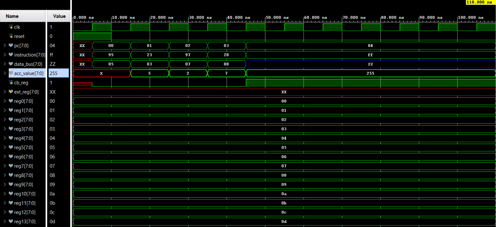
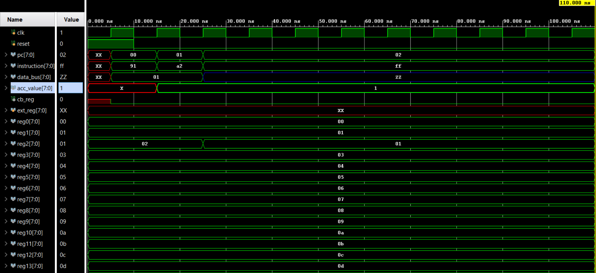
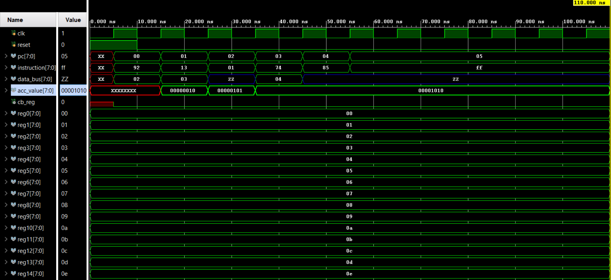

Ever wondered what goes on inside your computer? How does it understand commands and perform calculations? It all boils down to the processor, the brain of the operation. In this post, we’ll pull back the curtain build a simple, yet functional, 8-bit processor using Verilog.
The Big Picture: Our Processor’s Architecture
A processor might seem like a single, monolithic entity, but it’s actually a collection of specialized components working in harmony. For our design, we took a modular approach, creating separate Verilog modules for each part.
Here are the key components of our processor:
- Instruction Memory (
instruction_memory.v): This is where our program, a sequence of instructions, is stored. We’ve designed a 32-byte memory for this purpose. - Program Counter (PC): This is a special register that holds the memory address of the next instruction to be executed. After each instruction, it usually just increments by one, unless a branch or return instruction tells it to jump to a different address.
- Register File (
register_file.v): Think of this as the processor’s short-term memory. It’s a bank of 16 individual 8-bit registers that can be used to store data temporarily. - Accumulator (ACC): A special 8-bit register that’s central to many operations. For instructions that need two numbers (operands), one comes from the register file and the other comes from the accumulator. The result of the calculation is then stored back in the accumulator.
- Arithmetic Logic Unit (ALU): This is the mathematical and logical core of the processor. It performs all the calculations like addition, subtraction, multiplication, and logical operations (AND, XOR).
- Control Unit (
control_unit.v): The director of the show. It reads the instruction from the memory, decodes it, and then generates all the necessary control signals to tell the other components (like the ALU and Register File) what to do. - Special Registers (EXT and C/B):
- The EXT (Extended) Register is an 8-bit register used exclusively for multiplication to store the higher-order 8 bits of the 16-bit result.
- The C/B (Carry/Borrow) Register is a 1-bit register that holds the carry-out from an addition or the borrow from a subtraction. It’s crucial for conditional branching, where the program’s flow can change based on the result of a comparison.

The Language of the Machine: Our Instruction Set
Every processor has an Instruction Set Architecture (ISA), which is the specific set of commands it understands. Our instruction set is simple but powerful enough to write meaningful programs. Instructions are 8 bits long and generally fall into two formats.
The following table details every instruction our processor can execute.
| Opcode | Instruction | Explanation |
|---|---|---|
0000 0000 |
NOP |
No operation. The processor does nothing for one cycle. |
0001 xxxx |
ADD Ri |
Adds the content of Register i to the ACC. Updates the C/B register. |
0010 xxxx |
SUB Ri |
Subtracts the content of Register i from the ACC. Updates the C/B register. |
0011 xxxx |
MUL Ri |
Multiplies the content of Register i with the ACC. Stores the lower 8 bits in ACC and upper 8 in EXT. |
0101 xxxx |
AND Ri |
Performs a bitwise AND between ACC and Register i. C/B is not updated. |
0110 xxxx |
XRA Ri |
Performs a bitwise XOR between ACC and Register i. C/B is not updated. |
0111 xxxx |
CMP Ri |
Compares ACC with Register i (by subtracting) and updates C/B. If ACC >= Ri, C/B=0; else C/B=1. |
1001 xxxx |
MOV ACC, Ri |
Moves the content of Register i into the ACC. |
1010 xxxx |
MOV Ri, ACC |
Moves the content of the ACC into Register i. |
0000 0001 |
LSL ACC |
Logical shift left on the ACC. |
0000 0010 |
LSR ACC |
Logical shift right on the ACC. |
0000 0011 |
CIR ACC |
Circular shift right on the ACC. |
0000 0100 |
CIL ACC |
Circular shift left on the ACC. |
0000 0101 |
ASR ACC |
Arithmetic shift right on the ACC. |
0000 0110 |
INC ACC |
Increments the ACC. Updates C/B on overflow. |
0000 0111 |
DEC ACC |
Decrements the ACC. Updates C/B on underflow. |
1000 xxxx |
Br <addr> |
If C/B is 1, the PC jumps to the 4-bit address specified in the instruction. |
1011 xxxx |
Ret <addr> |
The PC jumps to the 4-bit address specified. Used for returning from subroutines. |
1111 1111 |
HLT |
Halts the processor. The PC stops incrementing. |
Diving Deep: The Verilog Modules
Now, let’s get our hands dirty and look at the Verilog code that brings this processor to life. We’ll go through the modules one by one.
The Top Module: processor.v
This is the main module that connects everything else together. It instantiates the instruction memory, register file, accumulator, ALU, and control unit, and wires them up. It also contains the core logic for the Program Counter (PC) and the special EXT and C/B registers.
Code:
`timescale 1ns / 1ps
module processor (
input clk,
input reset,
output [7:0] pc,
output [7:0] reg0, reg1, reg2, reg3, reg4, reg5, reg6, reg7,
output [7:0] reg8, reg9, reg10, reg11, reg12, reg13, reg14, reg15,
output reg cb_reg
);
// We expose the reg values to see the waveform in simulation
assign reg0 = reg_file.regs[0];
assign reg1 = reg_file.regs[1];
assign reg2 = reg_file.regs[2];
assign reg3 = reg_file.regs[3];
assign reg4 = reg_file.regs[4];
assign reg5 = reg_file.regs[5];
assign reg6 = reg_file.regs[6];
assign reg7 = reg_file.regs[7];
assign reg8 = reg_file.regs[8];
assign reg9 = reg_file.regs[9];
assign reg10 = reg_file.regs[10];
assign reg11 = reg_file.regs[11];
assign reg12 = reg_file.regs[12];
assign reg13 = reg_file.regs[13];
assign reg14 = reg_file.regs[14];
assign reg15 = reg_file.regs[15];
// Program Counter and Instruction Fetch
wire [7:0] instruction;
reg [7:0] pc_reg;
// Instruction Memory
instruction_memory ins_mem (
.addr(pc_reg),
.instruction(instruction)
);
// Other Components
wire [7:0] data_bus;
wire [7:0] acc_value, alu_result, ext_result;
wire alu_carry;
reg [7:0] ext_reg;
// Control Signals
wire reg_read_en;
wire [3:0] reg_read_addr;
wire reg_write_en;
wire [3:0] reg_write_addr;
wire acc_sel, acc_write_en, acc_output_en;
wire [3:0] alu_op;
wire ext_write_en, cb_write_en;
wire [7:0] next_pc;
// Register File Instantiation
register_file regs (
.clk(clk),
.read_addr(reg_read_addr),
.read_en(reg_read_en),
.write_addr(reg_write_addr),
.write_en(reg_write_en),
.bus(data_bus)
);
// Accumulator Instantiation
accumulator acc (
.clk(clk),
.alu_in(alu_result),
.bus_in(data_bus),
.acc_sel(acc_sel),
.write_en(acc_write_en),
.output_en(acc_output_en),
.acc_value(acc_value),
.bus_out(data_bus)
);
// ALU Instantiation
alu alu (
.acc(acc_value),
.bus(data_bus),
.alu_op(alu_op),
.result(alu_result),
.carry(alu_carry),
.ext_result(ext_result)
);
// Control Unit Instantiation
control_unit ctrl_unt (
.clk(clk),
.reset(reset),
.instruction(instruction),
.cb_reg(cb_reg),
.alu_carry(alu_carry),
.reg_read_en(reg_read_en),
.reg_read_addr(reg_read_addr),
.reg_write_en(reg_write_en),
.reg_write_addr(reg_write_addr),
.acc_sel(acc_sel),
.acc_write_en(acc_write_en),
.acc_output_en(acc_output_en),
.alu_op(alu_op),
.ext_write_en(ext_write_en),
.cb_write_en(cb_write_en),
.next_pc(next_pc),
.current_pc(pc_reg),
.bus_value(data_bus)
);
// Logic for PC, C/B, and EXT registers
always @(posedge clk) begin
if (ext_write_en) ext_reg <= ext_result;
if (reset) cb_reg <= 0;
else if (cb_write_en) cb_reg <= alu_carry;
if (reset) pc_reg <= 0;
else pc_reg <= next_pc;
end
assign pc = pc_reg;
endmoduleExplanation:
- The module takes
clkandresetas inputs and outputs the program counter (pc) and the values of all 16 registers for easy monitoring during simulation. - The
pc_regholds the current address, which is fed to theinstruction_memorymodule to fetch the currentinstruction. - The various components (
regs,acc,alu,ctrl_unt) are instantiated and connected via wires. Thedata_busis the main highway for moving data between the register file and the accumulator. - The
always @(posedge clk)block is the sequential heart of the processor. On every rising edge of the clock:- It updates the
ext_regbut only if the control unit asserts theext_write_ensignal (which only happens after aMULinstruction). - It updates the
cb_regwith the carry from the ALU if thecb_write_ensignal is high. - Crucially, it updates the
pc_regwith thenext_pcvalue calculated by the control unit. This drives the program forward. - The
resetsignal is used to initialize thepc_regandcb_regto a known state (0) at the beginning.
- It updates the
Storing the Program: The instruction_memory.v Module
This module acts as our processor’s program storage. For this project, instead of loading a program from an external source, we hardcode the instructions directly into a 32-byte memory array within this module.
A key design choice here is for safety and predictability. After defining our program instructions, we fill the rest of the memory with the HLT (Halt) instruction. This is a defensive measure to prevent the processor from running indefinitely or executing garbage data if the Program Counter ever jumps to an unused memory address.
Code:
module instruction_memory(
input [7:0] address,
output [7:0] instruction
);
reg [7:0] mem; // 32-byte instruction memory
integer i;
initial begin
// Load test program (Here we can add any set of instructions)
// For example:
mem[0] = 8'b1001_0101; // MOV R5 to ACC
mem[1] = 8'b0001_0100; // ADD R4 WITH ACC
mem[2] = 8'b1111_1111; // HALT
// Here we fill the rest of the memory with HALT because if
// in case PC jumps to address value other than above then
// we do not want the program to run indefinitely.
// This also ensures that the memory it is pointing to is
// always defined.
for (i = 3; i < 32; i = i + 1) begin
mem[i] = 8'b1111_1111;
end
end
assign instruction = mem[address];
endmoduleExplanation:
- The module has a simple interface: it takes an 8-bit
address(from the PC) and outputs the 8-bitinstructionstored at that address. reg [7:0] mem [0:32];declares our 32-byte memory.- The
initialblock is executed only once at the very beginning of the simulation. We use it to load our program into thememarray. - The final
assign instruction = mem[address];line implements the read functionality. This is a combinational assignment, meaning theinstructionoutput will instantly change whenever theaddressinput changes. There’s no clock involved, making it a simple read-only memory.
The Processor’s Scratchpad: register_file.v
The register file is the processor’s primary workspace. It consists of 16 fast, 8-bit registers that can be used to hold operands and temporary results. The Control Unit dictates whether to read data from a register onto the main data bus or to write data from the bus into a register.
For easier testing, we initialize the registers with some default values at the start (R0=0x00, R1=0x01, etc.).
Code:
`timescale 1ns / 1ps
module register_file (
input clk,
input [3:0] read_addr,
input read_en,
input [3:0] write_addr,
input write_en,
inout [7:0] bus
);
reg [7:0] regs[0:15];
// Initialize at start of the clock
integer i;
initial begin
for (i = 0; i < 16; i = i + 1) begin
regs[i] = 8'h00 + i;
end
end
wire [7:0] reg_out = read_en ? regs[read_addr] : 8'bz;
assign bus = reg_out;
always @(posedge clk) begin
if (write_en) regs[write_addr] <= bus;
end
endmoduleExplanation:
- The module has inputs for clock, read/write addresses, and read/write enable signals from the Control Unit. The
busisinoutbecause the register file can both drive data onto the bus (read) and accept data from it (write). - Reading: The line
wire [7:0] reg_out = read_en ? regs[read_addr] : 8'bz;is the core of the read logic. Ifread_enis high, the data from the selected register (regs[read_addr]) is placed onreg_out. Ifread_enis low, it outputs8'bz, which represents a high-impedance (or disconnected) state. This is critical because multiple components connect to thebus; usingbzensures that only one component drives the bus at any given time. - Writing: The
always @(posedge clk)block handles writing. If thewrite_ensignal is high, the value on thebusis captured and stored into the selected register (regs[write_addr]) on the next rising clock edge. This is a sequential operation, ensuring that the register file’s state only changes at discrete moments in time controlled by the clock.
The Calculator: alu.v (Arithmetic Logic Unit)
The Arithmetic Logic Unit (ALU) is the computational engine of our processor. This is where all the math and logic happens. It’s a purely combinational module, meaning it doesn’t have a clock or any memory of its own. It simply takes two 8-bit operands (one from the accumulator and one from the data bus) and an operation code from the Control Unit, and instantly produces a result.
Our ALU handles a variety of operations, including addition, subtraction, multiplication, bitwise AND/XOR, and various shift operations.
Code:
`timescale 1ns / 1ps
module alu (
input [7:0] acc,
input [7:0] bus,
input [3:0] alu_op,
output reg [7:0] result,
output reg carry,
output reg [7:0] ext_result
);
// Parameters for readable code
parameter ADD=0, SUB=1, MUL=2, AND=3, XRA=4, LS=5, RS=6, CRS=7, CLS=8, ASR=9, INC=10, DEC=11;
always @(*) begin
{carry, result} = 9'b0;
ext_result = 8'b0;
case (alu_op)
ADD: {carry, result} = acc + bus;
SUB: {carry, result} = acc - bus;
MUL: {ext_result, result} = acc * bus;
AND: result = acc & bus;
XRA: result = acc ^ bus;
LS: result = {acc[6:0], 1'b0};
RS: result = {1'b0, acc[7:1]};
CRS: result = {acc[0], acc[7:1]};
CLS: result = {acc[6:0], acc[7]};
ASR: result = {acc[7], acc[7:1]};
INC: {carry, result} = {1'b0, acc} + 9'h1;
DEC: {carry, result} = {1'b0, acc} - 9'h1;
default: result = acc;
endcase
end
endmoduleExplanation:
- The
parameterdefinitions at the top replace magic numbers (like 0, 1, 2) with human-readable names (ADD,SUB,MUL), making thecasestatement much easier to follow. - The
always @(*)block tells the synthesizer to re-evaluate the block whenever any of the inputs (acc,bus, oralu_op) change. ADD/SUB: The additionacc + busproduces a 9-bit result. We capture this entire result in a 9-bit wire{carry, result}. The most significant bit becomes ourcarry(or borrow forSUB), and the lower 8 bits become the mainresult.MUL: The multiplicationacc * busproduces a 16-bit result. We split this into two 8-bit parts:{ext_result, result}. The lower 8 bits (result) will go back to the accumulator, while the upper 8 bits (ext_result) are sent to the special EXT register.- Shifts: Operations like logical shift left (
LS) are implemented using Verilog’s concatenation operator. ForLS, we take the 7 most significant bits of the accumulator (acc[6:0]) and append a0at the end. default: This is a fallback case. If the ALU receives an undefinedalu_op, it simply passes the accumulator value through without modification.
The Central Register: accumulator.v
The accumulator (ACC) is a special 8-bit register that plays a central role in our processor’s design. It implicitly serves as one of the source operands for two-operand instructions, and it’s also the destination where the result is stored.
The accumulator can be loaded from two different sources: the output of the ALU (after a calculation) or directly from the data bus (for a MOV instruction). The Control Unit decides which source to use.
Code:
`timescale 1ns / 1ps
module accumulator (
input clk,
input [7:0] alu_in,
input [7:0] bus_in,
input acc_sel,
input write_en,
input output_en,
output reg [7:0] acc_value,
inout [7:0] bus_out
);
wire [7:0] next_acc = acc_sel ? alu_in : bus_in;
assign bus_out = output_en ? acc_value : 8'bz;
always @(posedge clk) begin
if (write_en) acc_value <= next_acc;
end
endmoduleExplanation:
wire [7:0] next_acc = acc_sel ? alu_in : bus_in;is a 2-to-1 multiplexer. If the control signalacc_selis high, the value for the accumulator comes from the ALU (alu_in). If it’s low, the value comes from the main data bus (bus_in).assign bus_out = output_en ? acc_value : 8'bz;is the output gate. When theoutput_ensignal is high, the accumulator’s current value is placed onto thebus_out. Otherwise, it outputs high-impedance (bz), letting another component use the bus.always @(posedge clk)makes this a register. The accumulator’s value (acc_value) is only updated on the rising edge of the clock, and only if thewrite_ensignal is asserted by the Control Unit.
The Brains of the Operation: control_unit.v
If the ALU is the calculator, the Control Unit is the operator. This module is the true brain of our processor. It takes the 8-bit instruction fetched from memory and, like a master puppeteer, pulls all the right strings. It decodes the instruction and generates the specific set of enable, select, and address signals that command the other components—the Register File, Accumulator, and ALU—to perform the required task.
This is a large, purely combinational module. Its logic is essentially a giant decoder implemented with a case statement. A crucial design pattern here is to set all control signals to a “safe” default state (usually ‘0’ or “off”) at the beginning of the always block. Then, for each specific instruction, we only assert the signals that need to be active. This prevents accidental behavior and ensures stability.
Code:
`timescale 1ns / 1ps
module control_unit (
input clk,
input reset,
input [7:0] instruction,
input cb_reg,
input alu_carry,
output reg reg_read_en,
output reg [3:0] reg_read_addr,
output reg reg_write_en,
output reg [3:0] reg_write_addr,
output reg acc_sel,
output reg acc_write_en,
output reg acc_output_en,
output reg [3:0] alu_op,
output reg ext_write_en,
output reg cb_write_en,
output reg [7:0] next_pc,
input [7:0] current_pc,
input [7:0] bus_value
);
parameter ADD=0, SUB=1, MUL=2, AND=3, XOR=4, LS=5, RS=6, CRS=7, CLS=8, ASR=9, INC=10, DEC=11;
always @(*) begin
// Default values
reg_read_en = 0;
reg_read_addr = 0;
reg_write_en = 0;
reg_write_addr = 0;
acc_sel = 0;
acc_write_en = 0;
acc_output_en = 0;
alu_op = 0;
ext_write_en = 0;
cb_write_en = 0;
next_pc = current_pc + 1;
casez (instruction)
8'b0001_zzzz: begin // ADD
reg_read_en = 1;
reg_read_addr = instruction[3:0];
alu_op = ADD;
acc_sel = 1;
acc_write_en = 1;
cb_write_en = 1;
end
8'b0010_zzzz: begin // SUB
reg_read_en = 1;
reg_read_addr = instruction[3:0];
alu_op = SUB;
acc_sel = 1;
acc_write_en = 1;
cb_write_en = 1;
end
8'b0011_zzzz: begin // MUL
reg_read_en = 1;
reg_read_addr = instruction[3:0];
alu_op = MUL;
acc_sel = 1;
acc_write_en = 1;
ext_write_en = 1;
end
8'b0000_0001: begin // LS
alu_op = LS;
acc_sel = 1;
acc_write_en = 1;
end
8'b0101_zzzz: begin // AND
reg_read_en = 1;
reg_read_addr = instruction[3:0];
alu_op = AND;
acc_sel = 1;
acc_write_en = 1;
end
8'b0111_zzzz: begin // CMP
reg_read_en = 1;
reg_read_addr = instruction[3:0];
alu_op = SUB;
cb_write_en = 1;
end
8'b1000_zzzz: begin // Conditional branch
if (cb_reg) next_pc = {4'b0, instruction[3:0]};
end
8'b1001_zzzz: begin // MOV Ri to ACC
reg_read_en = 1;
reg_read_addr = instruction[3:0];
acc_write_en = 1;
end
8'b1010_zzzz: begin // MOV ACC to Ri
acc_output_en = 1;
reg_write_en = 1;
reg_write_addr = instruction[3:0];
end
8'b1111_1111: next_pc = current_pc; // HALT
default: begin
next_pc = current_pc + 1;
end
endcase
end
endmoduleExplanation:
- By default, the
next_pcis set tocurrent_pc + 1, ensuring the program progresses sequentially. - The
casezstatement allows us to usezas a “don’t care” character. This is incredibly useful for instructions likeADD Ri(8'b0001_zzzz), where the upper 4 bits define the operation, and the lower 4 bits define the register operand. - Let’s trace
ADD R1(8'b0001_0001):- The
casezstatement matches8'b0001_zzzz. reg_read_enis set to 1, telling the register file to get ready to read.reg_read_addris set toinstruction[3:0], which is0001. The register file will output the contents ofR1onto the data bus.alu_opis set toADD, telling the ALU to add its inputs.acc_write_enandacc_sel=1are asserted, telling the accumulator to take the result from the ALU and store it on the next clock cycle.cb_write_enis asserted, so the C/B register will be updated with the carry-out of the addition.
- The
- Conditional Branch (
Br): This instruction is special. It checks the value of thecb_reg. Ifcb_regis 1, it overrides the defaultnext_pcand loads it with the 4-bit address from the instruction itself. Otherwise, it does nothing, and the PC increments as usual. - Halt (
HLT): The simplest, yet most important instruction for ending a program. It setsnext_pc = current_pc, causing the processor to get stuck in an intentional, one-instruction loop, effectively stopping execution.
Making Sure It Works: The Testbench
We’ve designed all the components, but how do we know they actually work together? We need to test them. In Verilog, this is done using a testbench. A testbench is a separate Verilog module that doesn’t represent actual hardware. Instead, its purpose is to instantiate our processor, generate the necessary inputs like a clock and reset signal, and let us observe the outputs.
Code:
`timescale 1ns / 1ps
module processor_TB();
reg clk, reset;
wire [7:0] pc;
wire [7:0] reg0, reg1, reg2, reg3, reg4, reg5, reg6, reg7,
reg8, reg9, reg10, reg11, reg12, reg13, reg14, reg15;
wire cb_reg;
// Instantiate the Unit Under Test (UUT)
processor uut (
.clk(clk),
.reset(reset),
.pc(pc),
.cb_reg(cb_reg),
.reg0(reg0), .reg1(reg1), .reg2(reg2), .reg3(reg3),
.reg4(reg4), .reg5(reg5), .reg6(reg6), .reg7(reg7),
.reg8(reg8), .reg9(reg9), .reg10(reg10),.reg11(reg11),
.reg12(reg12),.reg13(reg13),.reg14(reg14),.reg15(reg15)
);
// Clock generator
always #5 clk = ~clk;
initial begin
// Initialize signals
clk = 0;
reset = 1;
// Release reset after 10ns
#10 reset = 0;
// Run simulation for a while and then stop
#100 $finish;
end
endmoduleExplanation:
- We instantiate our
processor, which we labeluut(Unit Under Test). - The
always #5 clk = ~clk;line creates a clock signal with a 10ns period (5ns high, 5ns low). - The
initialblock controls the simulation sequence. It starts the clock, assertsresetfor 10ns to initialize the processor, and then de-asserts it to let the program run. The#100 $finish;command simply stops the simulation after 100ns.
The Moment of Truth: Simulation Results
With the design coded and the testbench written, we can finally run the simulation. By loading different programs into the instruction_memory.v module, we can generate waveform diagrams that provide a cycle-by-cycle view of the processor’s internal state. This is how we verify that every instruction and every component behaves exactly as expected.
Testing Individual Operations
First, we can test instructions in isolation to confirm their specific functionality. Let’s look at a couple of key functions.
Example 1: SUB and the C/B Flag
This test checks the subtraction operation and verifies that the Carry/Borrow (C/B) flag is set correctly on an underflow (borrow).
- Program in Memory:
mem[0] = 8'b1001_0101;// MOV R5 -> ACCmem[1] = 8'b0010_0011;// SUB R3 -> ACCmem[2] = 8'b1001_0111;// MOV R7 -> ACCmem[3] = 8'b0010_1000;// SUB R8 -> ACC (Causes underflow)mem[4] = 8'b1111_1111;// HALT
- Execution Analysis:
- Cycle 1 (PC=0): The
MOV R5 -> ACCinstruction executes. The initial value ofR5is0x05. The accumulatoracc_valueis loaded with5. - Cycle 2 (PC=1): The
SUB R3 -> ACCinstruction executes. The value ofR3(0x03) is subtracted from the accumulator.acc_valuebecomes5 - 3 = 2. Since there’s no borrow,cb_regremains0. - Cycle 3 (PC=2): The
MOV R7 -> ACCinstruction executes. Theacc_valueis updated with the value ofR7, which is7. - Cycle 4 (PC=3): The
SUB R8 -> ACCinstruction executes. The ALU attempts to subtract the value ofR8(8) from theacc_value(7). This operation,7 - 8, results in an underflow. Theacc_valuewraps around to255(0xFF), and critically, thecb_regis set to1to indicate a borrow occurred. - Cycle 5 (PC=4): The
HALTinstruction is fetched, and the PC stops incrementing.
- Cycle 1 (PC=0): The

Example 2: MOV (Register to Register)
This test demonstrates moving data between registers, using the accumulator as an intermediary. It’s a fundamental operation for rearranging data.
- Program in Memory:
mem[0] = 8'b1001_0001;// MOV R1 -> ACCmem[1] = 8'b1010_0010;// MOV ACC -> R2mem[2] = 8'b1111_1111;// HALT
- Execution Analysis:
- At the start, the registers are initialized with their index values, so
R1holds1andR2holds2. - Cycle 1 (PC=0): The
MOV R1 -> ACCinstruction is executed. The value ofR1(1) is loaded into the accumulator.acc_valuebecomes1. - Cycle 2 (PC=1): The
MOV ACC -> R2instruction executes. The value currently in the accumulator (1) is written into registerR2. The waveform clearly shows the value ofreg2[7:0]changing from its initial value of02to01. - Cycle 3 (PC=2): The
HALTinstruction stops the processor.
- At the start, the registers are initialized with their index values, so

Running a Full Program
Finally, we’ll look at a combined operation set that uses arithmetic, a shift, and a conditional branch to perform a more complex task.
- Program from Report “Combined Operations C”:
mem[0] = 8'b1001_0010;// MOV R2 -> ACCmem[1] = 8'b0001_0011;// ADD R3mem[2] = 8'b0000_0001;// SHL ACC (Shift Left)mem[3] = 8'b0111_0100;// CMP R4 (Compare with R4)mem[4] = 8'b1000_0101;// Branch to 5 if C/B=1mem[5] = 8'b1111_1111;// HALT
- Execution Analysis:
MOV R2 -> ACC: The value ofR2(2, or0b00000010) is loaded into the accumulator.ADD R3: The value ofR3(3) is added.acc_valuebecomes2 + 3 = 5(0b00000101).SHL ACC: The accumulator value is shifted left by one bit.acc_valuebecomes10(0b00001010).CMP R4: Theacc_value(10) is compared withR4(4). The ALU performs10 - 4. Since the result is positive, there is no borrow, andcb_regis set to0.Branch to 5 if C/B=1: The control unit checks thecb_regand finds it is0. The branch condition is false, so the branch is not taken. The processor proceeds to the next instruction in sequence.HALT: The PC, having incremented normally to 5, fetches theHALTinstruction and stops.

Conclusion
And there you have it—a simple 8-bit processor, designed, implemented in Verilog, and tested from the ground up. It highlights how a complex machine like a processor is built from a set of simpler, well-defined modules, all coordinated by a central control unit that speaks the language of the instruction set.
Building this processor reinforced a core engineering principle: breaking a large problem into smaller, manageable parts is the key to success. In a world increasingly dominated by software, taking a moment to understand the fundamental hardware that powers it all is an incredibly valuable experience.